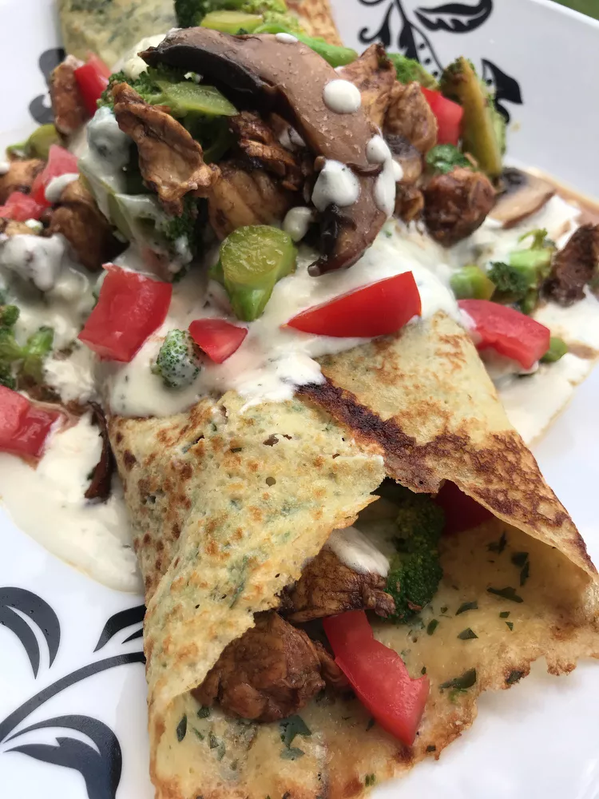

Chicken Crepe Riviera

Description
These mouthwatering crepes are stuffed with vinegar-marinated chicken and topped with a luxurious mixture of
heavy cream, pesto, and portobello mushrooms.
Ingredients
- 1 cup milk
- ½ cup all-purpose flour
- 2 eggs
- 1 tablespoon butter, at room temperature
- 6 leaves fresh basil leaves, minced
- 1 pinch salt
- 1 ½ pounds chicken tenderloins, diced
- ¼ cup grapeseed oil
- 1 ½ tablespoons balsamic vinegar
- 1 pinch salt
- 1 head broccoli, chopped
- 1 tablespoon butter
- 2 cloves garlic, minced
- 2 Roma tomatoes, chopped
- ½ (8 ounce) package sliced portobello mushrooms (Optional)
- ¾ cup heavy cream
- 2 tablespoons semi-soft cheese with garlic and herbs (such as Allouette®)
- 1 tablespoon pesto
Steps
- Combine milk, flour, and eggs in a blender. Blend until smooth, about 1 minute.
- Heat a nonstick pan over medium-high heat. Brush hot pan with a small amount of butter. Ladle about 3
tablespoons of batter into the center of the pan. Tilt pan from left to right to cover entire surface.
Sprinkle top of the crepe with 1 or 2 teaspoons of basil.
- Cook until edges begin to brown, 2 to 3 minutes. Flip crepe over and cook until set, about 2 minutes more.
Remove to a plate. Cook remaining batter, re-brushing pan with butter and stacking crepes with parchment
paper in between.
- Mix chicken, grapeseed oil, balsamic vinegar, and salt together in a resealable zip-top bag; marinate for 20
to 30 minutes.
- Drain and discard marinade. Heat a skillet over medium-high heat. Add chicken; cook and stir until juices
run clear, about 5 minutes.
- Place broccoli in a microwave-safe bowl with 2 tablespoons water. Microwave until crisp-tender, 3 to 4
minutes.
- Combine butter and garlic in the same skillet over medium heat. Cook until fragrant, about 1 minute. Add the
broccoli; stir to coat with the garlic butter. Stir in tomatoes and mushrooms and heat through.
- Stir cream, cheese, and pesto together in a separate saucepan over medium heat. Cook and stir until sauce
comes together, 3 to 5 minutes.
- Lay a crepe on a plate, line chicken filling down the middle, and drizzle sauce on top. Fold crepe over
burrito-style; spoon more chicken and sauce over top. Repeat with remaining crepes, filling, and sauce.